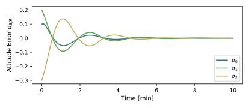
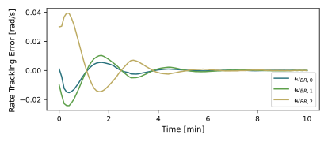
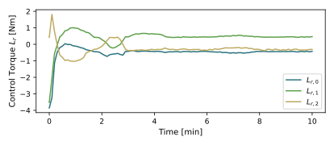
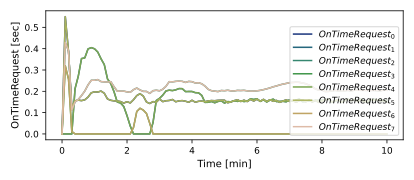
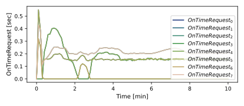
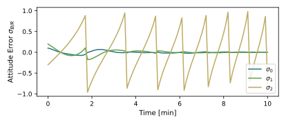
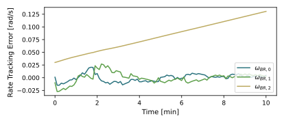
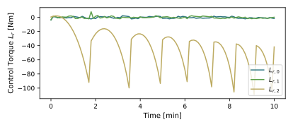
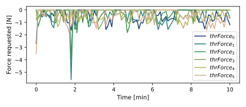
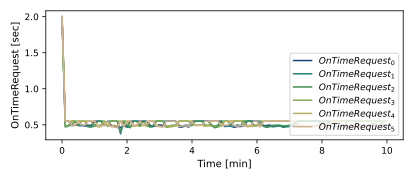

scenarioAttitudeFeedback2T_TH
Overview
This example script demonstrates how to use thrusters to stabilize the tumble of a spacecraft orbiting the Earth, using two separate threads. This script sets up a 6-DOF spacecraft which is orbiting the Earth. The goal is to illustrate how a set of thrusters can be added to the rigid Module: spacecraft hub, and what FSW modules are needed to control these thrusters. The simulation setup is performed with two processes, similarly to scenarioAttitudeFeedback2T, in which the dynamics and the FSW algorithms are run at different time steps. The control setup is the same as in scenarioAttitudeFeedbackRW, but here the RW actuation is replaced with thruster based control torque solution.
The script is found in the folder basilisk/examples and executed by using:
python3 scenarioAttitudeFeedback2T_TH.py
The simulation layout is shown in the following illustration. The two processes (SIM and FSW) are simulated and run at different time rates. Interface messages are shared across SIM and FSW message passing interfaces (MPIs).

When the simulation completes several plots are shown for the MRP attitude history, the rate tracking errors, the requested torque, the requested forces for each thruster and the On-Time commands.
Setup Changes to Simulate Thrusters Dynamic Effectors
At the beginning of the script all the plot functions are declared. Then the fundamental simulation setup is the same as the one used in scenarioAttitudeFeedback2T. The dynamics simulation is setup using a Module: spacecraft module to which an Earth gravity effector is attached. The simple navigation module is still used to output the inertial attitude, angular rate, as well as position and velocity messages.
The Thruster Dynamic Effector is added to the the rigid spacecraft hub, similarly to
scenarioAttitudeFeedbackRW. The support macro simIncludeThruster.py
provides several convenient tools to facilitate the setup process. This script allows the user to
readily create thrusters from a database of public specifications, customize them if needed, and add
them to the Module: spacecraft module.
The first thing to do is to create the (empty) set of thrusters that will later contain all the devices. Then
a fresh instance of the thruster factory class thrusterFactory() is created. This factory is able
to create a list of thruster devices, and return copies that can easily be manipulated and customized if needed.
The next step in this simulation setup is to use create() to include a particular thruster device.
The thrusterFactory() class contains several
public specifications of thruster devices which can be accessed by specifying their name. In our case we will consider
MOOG_Monarc_1 for the ACS Thrusters configuration, and MOOG_Monarc_22_6 for the DV Thrusters one.
The 2nd and 3rd required arguments are respectively the location of the
thruster \(\hat{\mathbf r}\) and the direction of its force \(\hat{\mathbf g}_t\). Both
vectors are expressed in the \(\cal B\)-frame. The remaining arguments are all optional.
The thrusters are generated by using the create() command inside a ‘for’ loop, which has the
job of assigning the respective location and direction arguments to each thruster, by cycling through the two
pre-defined arrays ‘location’ and ‘direction’.
The following table provides a comprehensive list of all the optional arguments of the create()
command. This table list the arguments, default values, as well as expected units.
Argument |
Units |
Type |
Description |
Default |
|---|---|---|---|---|
useMinPulseTime |
Bool |
flag if the thruster model should use a minimum impulse time |
False |
|
areaNozzle |
m^2 |
Float |
thruster nozzle exhaust cone exit area |
0.1 |
steadyIsp |
s |
Float |
thruster fuel efficiency in Isp |
100.0 |
MaxThrust |
N |
Float |
maximum thruster force |
0.200 |
thrusterMagDisp |
% |
Float |
thruster dispersion percentage |
0.0 |
MinOnTime |
s |
Float |
thruster minimum on time |
0.020 |
The command addToSpacecraft() adds all the created thrusters to the Module: spacecraft module. The final step
is to add the Module: thrusterDynamicEffector to the list of simulation tasks.
Flight Algorithm Changes to Control Thrusters
The general flight algorithm setup is the same as in the earlier simulation scripts. Here we use again the Module: inertial3D guidance module, the Module: attTrackingError module to evaluate the tracking error states, and the Module: mrpFeedback module to provide the desired \({\mathbf L}_r\) control torque vector. In addition, this time, we have to add two more modules: Module: thrForceMapping and Module: thrFiringSchmitt.
The Module: thrForceMapping module takes a commanded attitude control torque vector and determines a set of desired
thruster force values to implement this torque. It is assumed that the nominal thruster configuration is such that
pure torque solutions are possible. The module supports both on- and off-pulsing solutions, including
cases where the thruster solutions are saturated due to a large commanded attitude control torque.
The module set up is done in an analogous way as the previous ones. It can be noted that one of the inputs
corresponds to the output of the Module: mrpFeedback, being the commanded control torque. The other ones are the
information on the thrusters configuration and spacecraft inertia, whose messages will be created later in the script.
In addition, the control axes are specified using the full identity matrix for ACS thrusters, and its first
two rows for the DV ones, since in the latter case we are not able to control one axis (z in our case),
due to the geometrical configuration. The last value to specify is the thrForceSign, which will have the
value of -1 if off-pulsing DV thrusters are employed, and +1 with the on-pulsing ACS configuration.
The last needed FSW module is Module: thrFiringSchmitt. A Schmitt trigger logic is implemented to map a desired
thruster force value into a thruster on command time. The module reads in the attitude control thruster
force values for both on- and off-pulsing scenarios, and then maps this into a time which specifies how
long a thruster should be on. Four values are specified: thrMinFireTime (minimum thruster on-time in seconds),
level_on (Upper duty cycle percentage threshold relative to t min to turn on thrusters), level_off
(upper duty cycle percentage threshold relative to t min to turn on thrusters), and baseThrustState (0 by default
and set to 1 for DV thrusters). As expected, the thrusters force
input is directly the output of thrForceMapping, and also in this case we will need the thrusters configuration
message. It can be noted how the output of this module ends up to be the input commands for the
Module: thrusterDynamicEffector.
The flight algorithm needs to know how many thruster devices are on the spacecraft and what their
location and direction are. This is set through a flight software message that is read
in by flight algorithm modules that need this info. To write the required flight thrusters configuration message
a separate support macros called fswSetupThrusters.py is used.
Illustration of Simulation Results
show_plots = True, useDVThrusters = False
The first scenario has the 8 ACS Thrusters. By looking at the plots we can see how every axis is controlled, and the de-tumbling action is perfectly performed. We can also see how the requested force for each thruster (third plot) never reaches the 1 N limit (apart from during the initial transitory), which means that they are never saturated.
   

show_plots = True, useDVThrusters = True
In this setup we use the 6 DV Thrusters configuration. In this case, given the spacial configuration of the thrusters, it is impossible to control the third axis, so the result is a spacecraft attitude in which the x, y axes are controlled, but with a tumbling motion in the z axis. In this setup it can be clearly seen how the control action is performed just on the x and y axes, leaving the spacecraft tumbling around the z one. Another important remark is that, since the default state of the DV thrusters is ‘on’, the requested thruster force is always negative, as it can be seen in the plot.
    - scenarioAttitudeFeedback2T_TH.plot_OnTimeRequest(timeDataFSW, dataSchm, numTh)[source]
Plot the thruster on time requests.
- scenarioAttitudeFeedback2T_TH.plot_attitude_error(timeDataFSW, dataSigmaBR)[source]
Plot the attitude errors.
- scenarioAttitudeFeedback2T_TH.plot_rate_error(timeDataFSW, dataOmegaBR)[source]
Plot the body angular velocity tracking errors.
- scenarioAttitudeFeedback2T_TH.plot_requested_torque(timeDataFSW, dataLr)[source]
Plot the commanded attitude control torque.